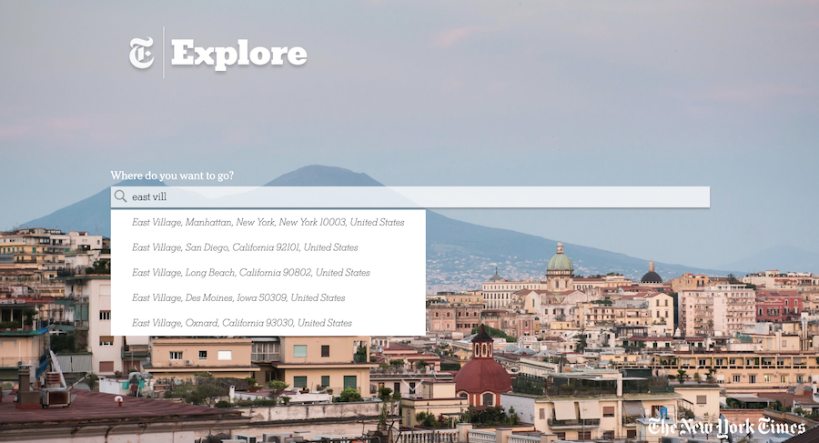
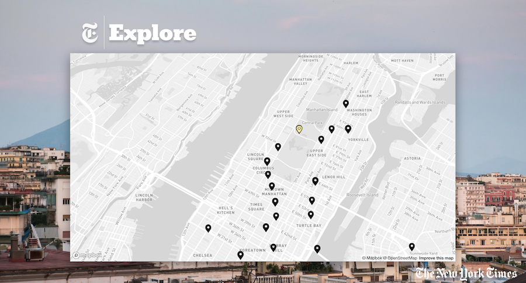
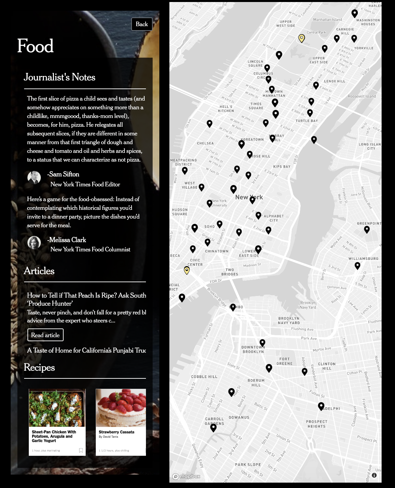
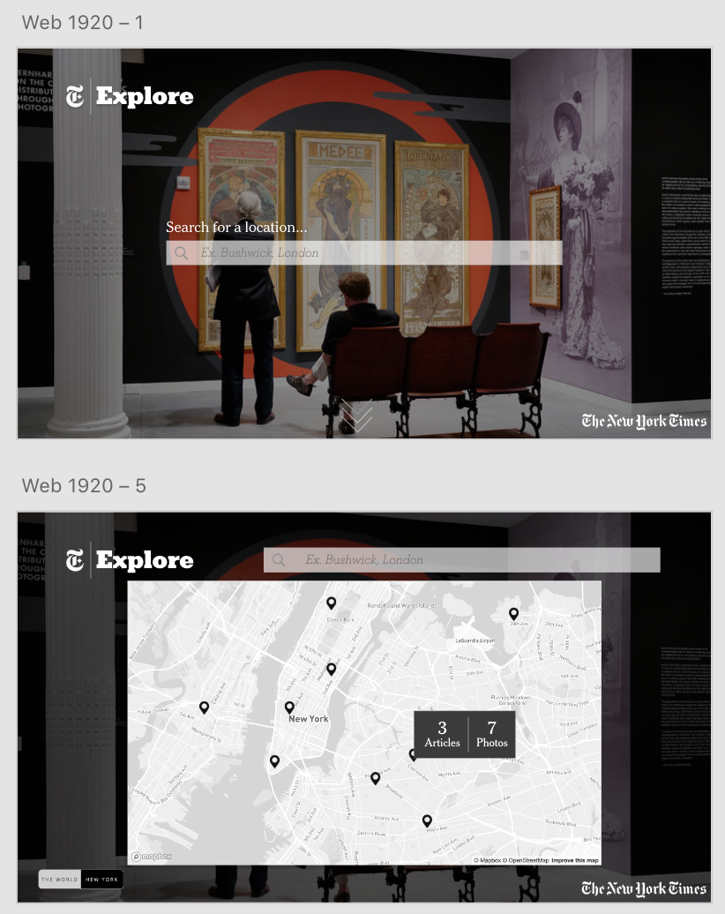
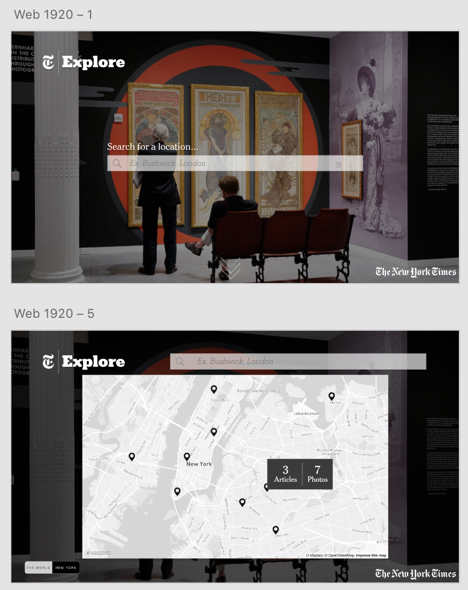

New York Times Explore
a stylized Proof of Concept web application which gives users a chance to immerse themselves in Times journalism around the world
The New York Time produces an enormous amount of journalism but only a fraction of that content ever sees the front page of the Times, whether in print or digital. Our goal was to help the New York Times share everything it knows about a place and its culture with its readers and thus, we created NYT Explore.
A location based approach:
After speaking to current Times readers and new users, the individual Culture, Food, Travel, and Style desks, and writing our user stories, we wanted to reinvent the Newsreader app. We decided on planting articles, events, restaurants, and photos on a map, essentially turning the user's location into a treasure trove of Times knowledge.
The user can either type in their location:
Or explore the map:
 Searching for a location takes our user to the dashboard. Here, the user would be able to search the different sections of the paper for events near them, articles written about the area, photos taken nearby, etc. This dashboard is divided into four categories: Food, Art, Style, and Events.
The dashboard:

Clicking into one of the sections brings you to a feed of what is being published now in your area. For example, here in Art we see exhibitions happening in NYC this weekend as well as images tagged nearby. We also provide bite-size quotes from Times journalists in order to provide new content on our more personalized Newsreader platform.


The events section, instead of allowing the users to scroll through NYT photos, will have a scrollable list of upcoming events in their area. This will not only allow a higher rate of user interest in the app but also will allow for advertising partnerships and will generate revenue for the Times.
Other mock-ups I created:
 
